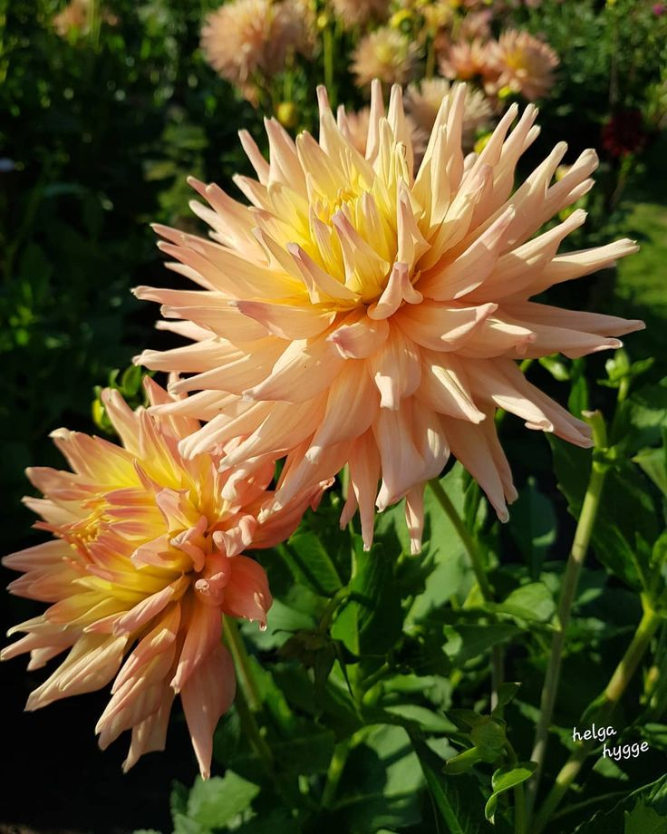

Fran's Story
Francine “Fran” Miller opened Artem’s Flowers in 1995 with a simple dream: to bring more color and joy to New York City. Over three decades later, Fran continues to personally select each bloom, ensuring every bouquet tells a story of beauty and connection.
When Fran’s not at the shop, she’s in her own garden experimenting with rare plants, or volunteering at the community center to teach kids about the magic of flowers.
Seasonal Picks

Golden Autumn Sunflowers
These bright orange and yellow sunflowers are the perfect way to celebrate the season.
🌻 Only here ‘til October!